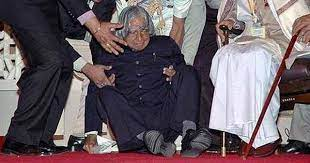

|
|
MISSILE MAN OF INDIA
In short About the person
- ⇒
Avul Pakir Jainulabdeen Abdul Kalam was born on 15 October 1931 – 27 July 2015 was an Indian aerospace scientist and statesman who served as the 11th president of India from 2002 to 2007
- ⇒
He was born and raised in Rameswaram, Tamil Nadu and studied physics and aerospace engineering
- ⇒
He spent the next four decades as a scientist and science administrator, mainly at the Defence Research and Development Organisation (DRDO) and Indian Space Research Organisation (ISRO) and was intimately involved in India's civilian space programme and military missile development efforts
- ⇒
He thus came to be known as the Missile Man of India for his work on the development of ballistic missile and launch vehicle technology.
- ⇒
Kalam was elected as the 11th president of India in 2002 with the support of both the ruling Bharatiya Janata Party and the then-opposition Indian National Congress. Widely referred to as the "People's President".
Early Life And Educations
⇒Avul Pakir Jainulabdeen Abdul kalam was born on 15 October 1931 to a Tamil Muslim Familyin the pilgrimage center of Rameswaram on Pamban island
⇒His father Jainulabdeen Marakayar was a boat owner and imam of a local mosque
⇒His mother Ashiamma was a housewife
- His father owned a ferry that took Hindu pilgrims back and forth between Rameswaram and the now uninhabited Dhanushkodi.
- Kalam was the youngest of four brothers and one sister in his family.
- His ancestors had been wealthy Marakayar traders and landowners, with numerous properties and large tracts of land. Marakayar are a Muslim ethnic group found in coastal Tamil Nadu and Sri Lanka who claim descent from Arab traders and local women.
- The family business had involved trading groceries between the mainland and the island and to and from Sri Lanka, as well as ferrying pilgrims between the mainland and Pamban. With the opening of the Pamban Bridge to the mainland in 1914, however, the businesses failed and the family fortune and properties were lost by the 1920s, apart from the ancestral home.
➔In his school years, Kalam had average grades but was described as a bright and hardworking student who had a strong desire to learn. He spent hours on his studies, especially Mathematics.
➔He moved to Madras in 1955 to study aerospace engineering in Madras Institute of Technology.
While he was wroking on a project,the Dean threatened to revoke his scholarship unless the project was finished
Carrer as a Scientist

This is the stage where i learnt the displinary qualities of the Great persons like Dr A.P.J. Abdul Kalam, M.s. Swaminathan,Srinivasa Ramanujan etc..The Early stages arrived through this knowledge and acquistion of ideas for me.
After graduating from the Madras Institute of Technology in 1960, Kalam joined the Aeronautical Development Establishment of the Defence Research and Development Organisation (by Press Information Bureau, Government of India) as a scientist after becoming a member of the Defence Research & Development Service (DRDS).
➜He started his career by designing a small hovercraft, but remained unconvinced by his choice of a job at DRDO.
➜Kalam joined the INCOSPAR, working under Vikram Sarabhai, the renowned space scientist and He was interviewed and recruited into ISRO by H. G. S. Murthy, the first Director of Thumba Equatorial Rocket Launching Station (TERLS).
➜In 1969, Kalam was transferred to the Indian Space Research Organisation (ISRO) where he was the project director of India's first Satellite Launch Vehicle (SLV-III) which successfully deployed the Rohini satellite in near-earth orbit in July 1980.
➜Kalam had first started work on an expandable rocket project independently at DRDO in 1965.
➜ In 1969, Kalam received the government's approval and expanded the programme to include more engineers.
Presidency
Kalam served as the 11th president of India, succeeding K. R. Narayanan.He won the 2002 presidential electionwith an electoral vote of 922,884, surpassing the 107,366 votes won by Lakshmi Sahgal. His term lasted from 25 July 2002, to 25 July 2007.
On 10 June 2002, the National Democratic Alliance (NDA) which was in power at the time, expressed that they would nominate Kalam for the post of President, and both the Samajwadi Party and the Nationalist Congress Party backed his candidacy
On 18 June 2012, Kalam declined to contest the 2012 presidential poll. He said of his decision not to do so:
Many, many citizens have also expressed the same wish. It only reflects their love and affection for me and the aspiration of the people. I am really overwhelmed by this support. This being their wish, I respect it. I want to thank them for the trust they have in me.
Awards and Honours
⇒Kalam received 7 honorary doctorates from 40 universities.
⇒The Government of India honoured him with thePadma Bhushan in 1981 and the Padma Vibhushan in 1990 for his work with ISRO and DRDO and his role as a scientific advisor to the Government
⇒In the year of 1997,kalam recieved India's highest civilian honour,the Bharat Ratnafor his contribution to the scientific research and modernisation of defence technology in India.
⇒In the year of 2013,he was the recipient of the Von Braun Award from the the National space Societyto recognize excellence in the management and leadership of a space-related project".
Death

On 27 July 2015, Kalam travelled to Shillong to deliver a lecture on"Creating a Livable Planet Earth"at the Indian Institue of Management Shillong.
While climbing a flight of stairs, he experienced some discomfort, but was able to enter the auditorium after a brief rest.
At around 6:35 p.m. IST, only five minutes into his lecture, he collapsed.
He was rushed to the nearby Bethany Hospital in a critical condition; upon arrival, he lacked a pulse or any other signs of life.
Despite being placed in the intensive care unit, Kalam was confirmed dead of a sudden cardiac arrest at 7:45 p.m.
His last words,to hid aide Srijan Pal Singh were reportedly:
"Funny guy! Are you doing well?"
-
For more information about Dr. A.P.J. Abdul Kalam visit Wikipedia

Publications
-
Developments in Fluid Mechanics and Space Technology by A P J Abdul Kalam and Roddam Narasimha; Indian Academy of Sciences, 1988.
-
India 2020:A Vision for the New Millennium by A P J Abdul Kalam, Y. S. Rajan; New York, 1998.
-
Wings of fire: An Autobiography by A P J Abdul Kalam, Arun Tiwari; Universities Press, 1999.
-
Ignited Minds:Unleashing the Power Within India by A P J Abdul Kalam; Viking, 2002.
-
The Luminous Sparks by A P J Abdul Kalam, by; Punya Publishing Pvt Ltd., 2004.
-
Mission India by A P J Abdul Kalam, Paintings by Manav Gupta; Penguin Books, 2005
Last photo of the Legendary scientist

“If you fail, never give up because F.A.I.L. means ‘First Attempt In Learning’. End is not the end; in fact E.N.D. means ‘Effort Never Dies’. If you get No as an answer, remember N.O. means ‘Next Opportunity’. So Let’s be positive.”
Thank you sir for the desires and your work towards nation
Concluded By Rama Krishna